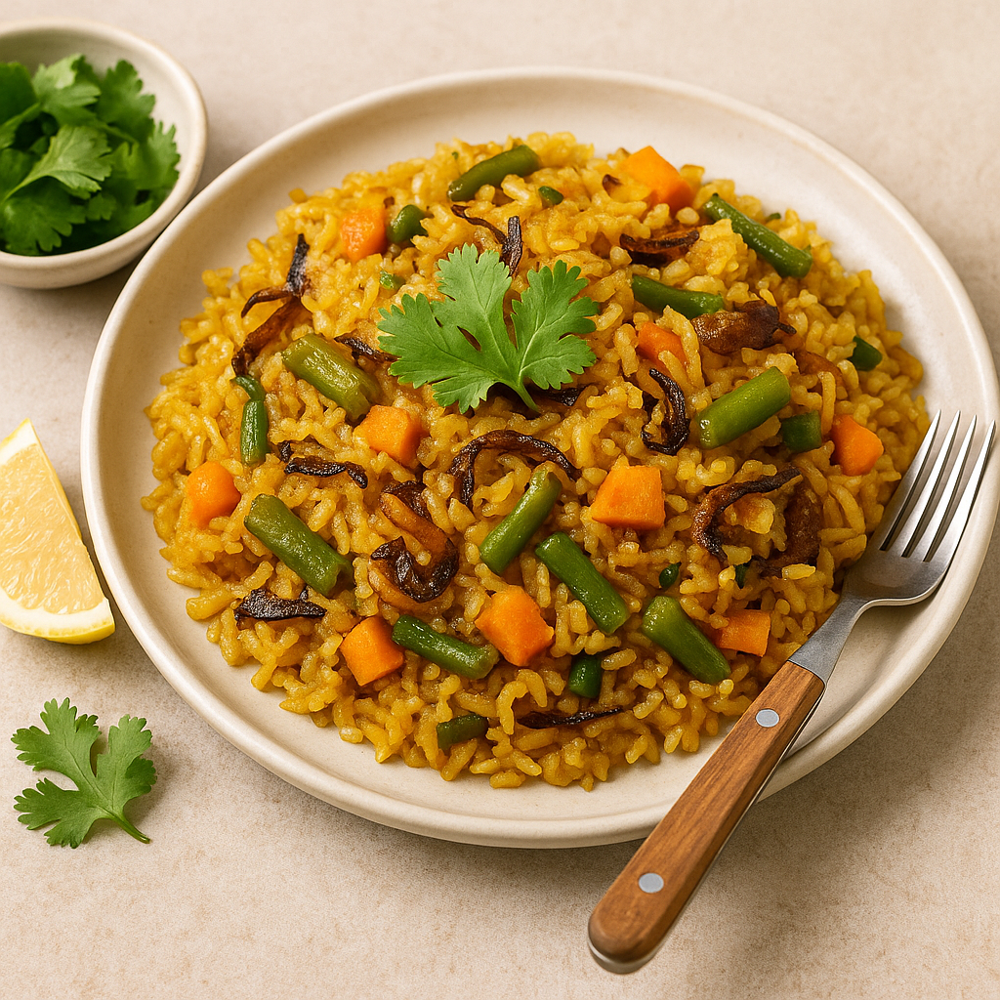

🔍 TL;DR
This Konjac rice biryani is a vegetarian twist on a beloved Indian classic. It's low-carb, diabetic-friendly and perfect for clean eating.
🗂 Table of Contents
🌾 Why Konjac Rice Biryani?
Biryani is a timeless Indian favorite — fragrant rice layered with spices and vegetables. By using Konjac rice (Shirataki rice), we recreate this classic in a way that fits keto, low-carb, and diabetic diets.
🥕 Ingredients
- 1 pack Yamaki Konjac Rice (200g)
- 1 tbsp ghee or olive oil
- 1/2 tsp cumin seeds
- 1 bay leaf, 2 cloves, 2 cardamoms
- 1/2 cup onions (thinly sliced)
- 1 tsp ginger-garlic paste
- 1/2 cup chopped vegetables (carrots, beans, peas)
- 1/4 tsp turmeric
- 1/2 tsp red chili powder
- 1/2 tsp garam masala
- Salt to taste
- Fresh coriander & mint leaves
- 1 tbsp curd (optional for richness)
- Lemon wedges for serving
👨🍳 Instructions
- Prep the Konjac rice: Rinse thoroughly and dry-roast in a pan for 4–5 minutes to remove extra moisture.
- Sauté the base: Heat ghee/oil, add cumin, bay leaf, cloves, and cardamom. Add sliced onions and sauté until golden brown.
- Spices & veg: Add ginger-garlic paste, turmeric, red chili, and garam masala. Stir in the chopped vegetables and salt.
- Steam-cook: Cover and cook vegetables for 5 minutes. Add curd for creaminess if using.
- Layer the rice: Mix in the dry-roasted Konjac rice. Stir gently to avoid breaking the grains.
- Finish & garnish: Sprinkle mint, coriander, and squeeze lemon juice. Let rest for 2 mins before serving.
📋 Konjac Rice Biryani Recipe Card
Prep time: 10 mins | Cook time: 15 mins | Serves: 2
❓ FAQs
Q: Is Konjac rice healthy?
Yes. It’s low in calories, has almost zero carbs, and helps regulate blood sugar levels.
Q: Can I use pressure cooker or instant pot?
Yes, but reduce cooking time and skip dry roasting.
Q: What can I serve with Konjac biryani?
Try cucumber raita, mint chutney, or plain curd.
💡 Did You Know?
Konjac root (glucomannan) is known to promote fullness and aid digestion. This makes Konjac biryani a great option for weight-watchers!
📌 Want to stock Konjac products? Become a Yamaki distribution partner today!